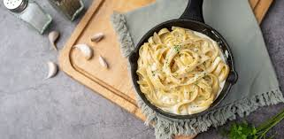
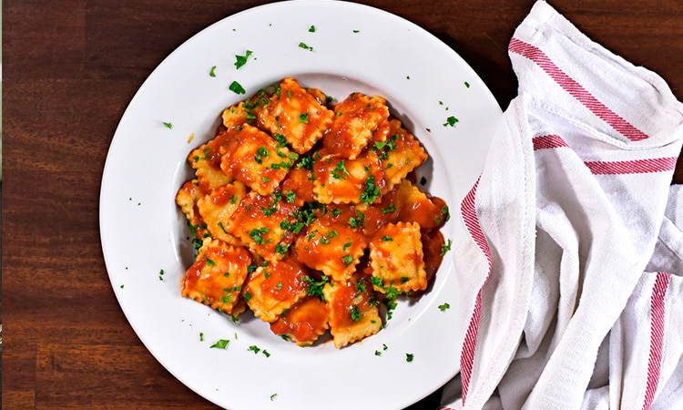

Fettuccine Cremoso della Casa
Preparado com massa fettuccine de textura delicada, este prato é envolvido em um molho branco cremoso e aveludado, elaborado com creme selecionado e um toque especial de queijos que garantem profundidade e equilíbrio ao sabor. Finalizado com ervas frescas que realçam o aroma e trazem leveza à composição, o Fettuccine Cremoso della Casa é uma escolha perfeita para quem busca uma experiência reconfortante, marcante e cheia de personalidade. - R$ 42,90

|
 Ravioli al PomodoroDelicados raviolis de massa artesanal, cuidadosamente preparados e recheados para proporcionar textura e sabor equilibrados em cada mordida. Envolvidos em um molho de tomate encorpado, feito a partir de tomates selecionados e temperado na medida certa com ervas aromáticas, o prato traz a combinação perfeita entre acidez, frescor e intensidade. Finalizado de forma simples e elegante, o Ravioli al Pomodoro valoriza a tradição da cozinha italiana, oferecendo uma experiência autêntica, leve e cheia de personalidade. - R$ 49,90 |

Spaghetti al Pomodoro con BasilicoUm clássico atemporal da culinária italiana, preparado com spaghetti de textura perfeita e envolvido em um molho de tomate tradicional, feito com ingredientes selecionados e cozido lentamente para realçar seu sabor natural. Finalizado com queijo e folhas de manjericão fresco, o prato entrega equilíbrio entre acidez, aroma e leveza, resultando em uma combinação simples, autêntica e cheia de personalidade. - R$ 34,90 |

Conchiglioni Gratinati al FornoGrandes conchas de massa recheadas com um cremoso mix de queijos, cuidadosamente dispostas e levadas ao forno com molho de tomate encorpado. Finalizado com uma camada gratinada dourada e irresistível, o prato combina intensidade, cremosidade e aquele toque caseiro que remete às melhores receitas de família. - R$ 54,90 |

Rondelli della NonnaDelicadas lâminas de massa envolvem um recheio cremoso e bem temperado, formando rolinhos que são cuidadosamente acomodados e levados ao forno com um molho rico e envolvente. Inspirado nas receitas de família, o Rondelli della Nonna traz camadas de sabor que se completam a cada garfada, com textura macia, aroma marcante e finalização gratinada que eleva o prato a uma experiência intensa e memorável. Um clássico que carrega tradição, afeto e autenticidade em cada detalhe. - R$ 57,90 |